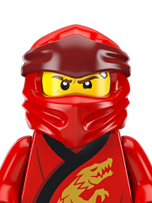
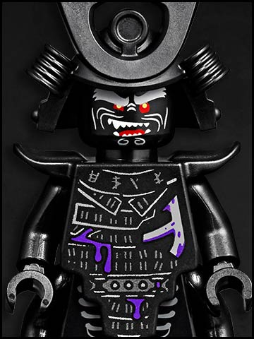
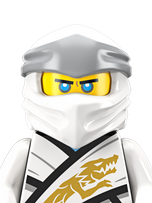

LEGO NinjaGo |
|
|  |
Conoce a Kai |
| La impulsiva personalidad, el feroz temperamento y la inmensa energía de Kai reflejan el fuego que arde en su interior. Su intenso sentido de la justicia lo hace obstinado y jamás se detiene ante nada cuando se propone un objetivo... aunque ese es también el origen de su coraje. Como hermano mayor de Nya, siempre está tratando de protegerla. Aunque la seguridad de Kai puede resultar abrumadora para algunas personas, eso lo convierte también en un líder del grupo y uno de sus miembros con más personalidad. | |
|  |
Conoce a Lord Garmadon |
| Luego de ser mordido por el Gran Devorador cuando era niño, el hermano de Wu se volvió perverso y se convirtió en Lord Garmadon. Cuando su hijo Lloyd acabó con la amenaza que representaba el Señor Supremo, Garmadon logró librarse finalmente del veneno que corría por sus venas. Fue entonces que se convirtió en un afectuoso padre para Lloyd. La última vez que se supo de él, Garmadon se había sacrificado para salvar el mundo de NINJAGO y se perdió en el Reino Maldito | |
|  |
Conoce a Zane |
| Zane, el antiguo ninja blanco, es un inteligente y poderoso nindroide (robot ninja) que desempeña la función de inteligencia computacional en el grupo. Fue creado por el Dr. Julien para proteger a quienes no podían protegerse a sí mismos. Entregado a la paz, la libertad y el coraje, este racional ninja es valeroso y atento, y tiene un gran corazón... aunque no tenga ninguno! | |
Bajo la sabia dirección del anciano Maestro del Spinjitzu Wu, nuestros jóvenes y valientes ninjas siempre están listos para luchar contra el mal, salvar al mundo de LEGO NINJAGO de todos sus enemigos y restaurar la armonía. |
|
El programa se desarrolla en el mundo ficticio de Ninjago, el cual está inspirado en la cultura China y Japonesa. Aparece en la serie como un terreno extenso, tal como la cadena de islas de Japón, con diferentes áreas hogar de diferentes animales y plantas, incluyendo dragones y serpientes místicas (Como el Gran Devorador). Tiene un inframundo, donde los villanos como Lord Garmadon y la Armada Esqueleto habitan; junto a lugares sagrados donde la mayoría de las cosas están ocultas u olvidadas (como las Armas Doradas y la tumba Serpentín).
Similares a los de la pasada generación de productos Lego Bionicle, los personajes principales tienen relación con algunos elementos de la tierra (en este caso Fuego, Hielo, Rayo y Tierra). Además, el mundo tiene un aspecto moderno, como lo demuestran los rascacielos y los vehículos, entre otras cosas.